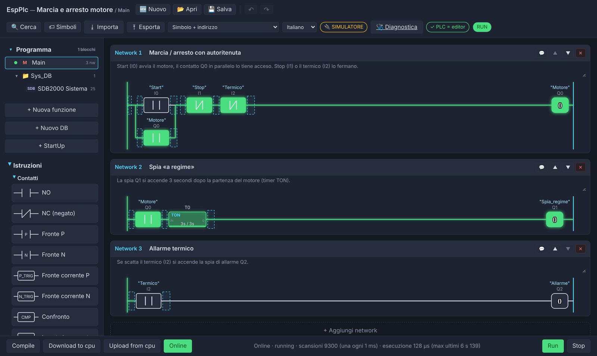

Il PLC vero,
alla portata di tutti.
MiaPLC è un PLC basato su ESP32 che si programma in ladder da un editor nel browser, con network, funzioni, blocchi dati, Online e diagnostica, come in fabbrica. Con pochi euro hai una scheda vera sul banco e cominci a imparare l'automazione industriale.
Ai miei tempi, a scuola, un PLC era un miraggio.
Costava troppo per metterlo in mano a ogni studente: nei laboratori ce n'erano pochi, sempre gli stessi, e si guardavano più di quanto si usassero. Chi voleva esercitarsi a casa, semplicemente, non poteva.
Oggi un microcontrollore da pochi euro ha una potenza che allora era impensabile, e gli strumenti moderni, intelligenza artificiale compresa, permettono a una persona sola di costruire qualcosa che si avvicina davvero al mondo industriale.
Ho dedicato il mio tempo a realizzare questa versione di PLC: molto simile a quelli che si trovano negli impianti, ma costruita su hardware economico e libero.
«MiaPLC non serve solo ad abbassare i costi per le scuole. Serve ad avviare un percorso: i concetti che impari qui sono gli stessi che ritroverai negli ambienti di sviluppo dei grandi marchi dell'automazione. E nel frattempo puoi usarlo per un progetto hobbistico serio.»— Denys, PLC & Automation Engineer
- Una scheda per ogni studente, non una per laboratorio
- Si programma dal browser: niente licenze, niente installazioni sui PC della scuola
- Le stesse idee dell'industria: scansione, network, FC, DB, Online
- Software libero (GPL-3.0): si studia anche com'è fatto dentro
Un PLC completo, dentro un ESP32
Il firmware esegue il programma in una macchina virtuale a bytecode, ciclo dopo ciclo. L'editor è servito dal PLC stesso: lo apri dal browser e programmi.
Ladder come in fabbrica
Network con titolo e commento, contatti, bobine, SET/RESET, fronti, confronti, box matematici e di conversione.
Editor nel browser
Nessun programma da installare: l'editor gira nel PLC. Compile, Download, Run, come sei abituato.
Online e diagnostica
Vedi la corrente scorrere nei contatti, i timer contare, i valori dei DB. Log, tempi di scansione, RAM.
Blocchi strutturati
Main, StartUp, funzioni (FC) con interfaccia, DB ritentivi, strutture, array. FC anche in ST e in C.
Timer, contatori, numeri
TON, TOF, TP, CTU, CTD, CTUD; tipi da BOOL a REAL e TIME; scala lineare per gli analogici.
Comunicazione
Ethernet e WiFi, Modbus TCP, moduli I/O remoti µLink, pannello HMI touch.
Programmi in ladder, lo vedi lavorare dal vivo
Marcia e arresto di un motore con autoritenuta, in Online: in verde i contatti chiusi e le bobine eccitate.

- Tabella dei simboli e riferimenti incrociati
- Bit di sistema: primo ciclo, clock 1/2/10 Hz
- Interfaccia in più lingue
- Aggiornamento firmware dall'editor o da USB
- Analisi della RAM e del tempo di scansione
- Backup e ripristino del PLC
Diagnostica, configuratore e pannello
Tutto quello che serve oltre al ladder, con la stessa idea: semplice per iniziare, completo quando serve.


📘 Manuale: crea gli esempi 🔧 Manuale: hardware con MiaConfig
Dal banco di scuola al progetto in garage
Scuole e istituti tecnici
Laboratori di automazione con una scheda per studente, senza licenze software e con un costo che si ripaga subito.
Studenti e autodidatti
Ti eserciti a casa con gli stessi concetti che userai al lavoro. E con il simulatore anche senza scheda.
Maker e hobbisti
Cancelli, serre, acquari, impianti di casa, banchi prova: logica a relè seria al posto dello sketch improvvisato.
Tecnici e prototipi
Prove rapide, piccoli automatismi, didattica in azienda. Per le funzioni di sicurezza resta il PLC di sicurezza.
Quattro pezzi che lavorano insieme
Firmware ed editor
La macchina virtuale del PLC, il ciclo di scansione, i moduli (rete, orologio, I/O) e l'editor web.
Configuratore
Disegni la tua scheda (ingressi, uscite, Ethernet, orologio) e lui compila il firmware. Windows, Linux, macOS.
I/O remoti
Bus su Ethernet cablata per moduli I/O: altri ESP32 o anche Arduino Uno con shield W5100/W5500.
Pannello operatore
Pannello touch da 10,1" su ESP32-P4 che legge e scrive i dati del PLC.
Schede di riferimento
| Chip | Esempio | Note |
|---|---|---|
| ESP32 | Olimex ESP32-EVB | Ethernet a bordo, relè, orologio DS3231 opzionale |
| ESP32-C3 | moduli piccoli + W5100 / W5500 | la soluzione più economica, anche come modulo I/O µLink |
| ESP32-S3 | ESP32-S3-DevKitC-1 | più memoria per programmi grandi |
| ESP32-P4 | schede con Ethernet | la più potente; anche base del pannello HMI |
Dove sta andando MiaPLC
Il progetto va avanti un passo alla volta. Le prove si fanno nei limiti di quello che riesco a comprare e a progettare, quindi i tempi non sono promesse: questa è la strada, con gli ultimi punti che per ora sono sogni.
- in corso
La prima scheda ufficiale
Il primo PLC MiaPLC progettato apposta, con moduli Espressif già certificati per la parte radio.
- in parte fatto
Provare tutti i chip del configuratore
MiaConfig ha già molti chip e schede. Una parte è provata perché ce l'ho sul banco; le altre sono da comprare e mettere alla prova una per una.
- in programma
Moduli µLink di base
Moduli I/O su P4 e switch multiporta KSZ, con protezioni contro gli errori di collegamento a valle e connettori pensati per agganciarli facilmente a schede progettate dagli utenti stessi.
- in programma
Prove fisiche con 50, 100 e 500 schede
Il simulatore e le prove con pochi moduli dicono molto, ma il bus va provato dal vero, a numeri sempre più grandi.
- in valutazione
Oltre il P4: chip più potenti
Sto valutando i processori Allwinner T113 e T156. Per i chip più potenti il punto di domanda è sempre lo stesso: il costo e l'avvio della memoria DDR.
- in programma
Sicurezza informatica e regole europee
Prima di certificare, il firmware deve rispettare le regole sulla sicurezza informatica: requisiti della direttiva RED (norma EN 18031), Cyber Resilience Act, password obbligatorie e mai di fabbrica, comandi critici protetti (RUN/STOP, Download, forzature), aggiornamenti firmati e una procedura per segnalare e correggere le vulnerabilità.
- il sogno
Schede certificate per l'industria
Far certificare le schede e renderle integrabili negli impianti industriali, sulle piattaforme più potenti (T156, Zynq e simili).
Vuoi dare una mano con prove, hardware o idee? Scrivimi.
Le donazioni vanno al progetto MiaPLC
MiaPLC è un progetto open source di Denys, sviluppato nel tempo libero e senza compenso. Le donazioni servono a farlo crescere e a portarlo nelle scuole. E se preferisci, puoi offrirmi un caffè.
Non due lampadine: un impianto vero
Belacqua è un allevamento di 100 storioni beluga in 20 vasche, comandato da un PLC MiaPLC con due moduli I/O µLink e un pannello touch: ossigeno e pasti vasca per vasca, ricircolo con risparmio energetico, 146 allarmi, 369 network di ladder. Tutto scaricabile, con il manuale.

Provalo adesso, senza scheda
L'editor gira nel browser con un PLC simulato: carica un esempio, premi Download e Run, accendi gli ingressi e guarda il ladder lavorare.
Parliamone
Sei un docente e vuoi provare MiaPLC in laboratorio? Hai un progetto e vuoi capire se fa al caso tuo? Vuoi dare una mano, segnalare un problema o proporre un'idea? Scrivimi.
Scuole
Disponibile per sperimentazioni didattiche e per preparare esercitazioni sul programma del corso.
Codice sorgente
Firmware, editor e configuratore sono software libero (GPL-3.0), sotto l'organizzazione miaplc su GitHub. Stato attuale: repository privati. Codice e download saranno pubblicati alla fine del 2026.